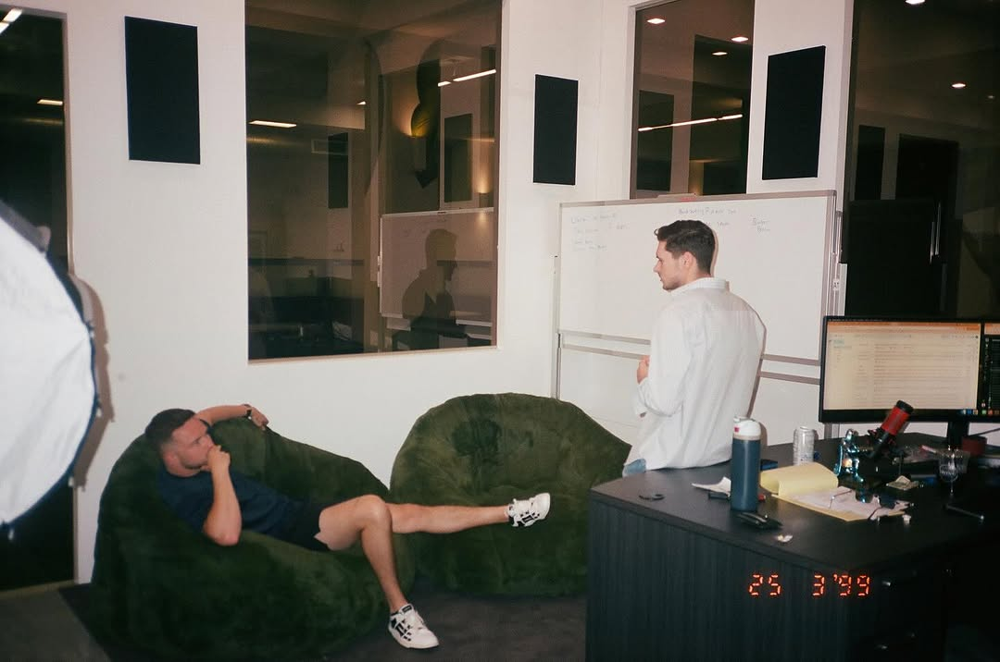
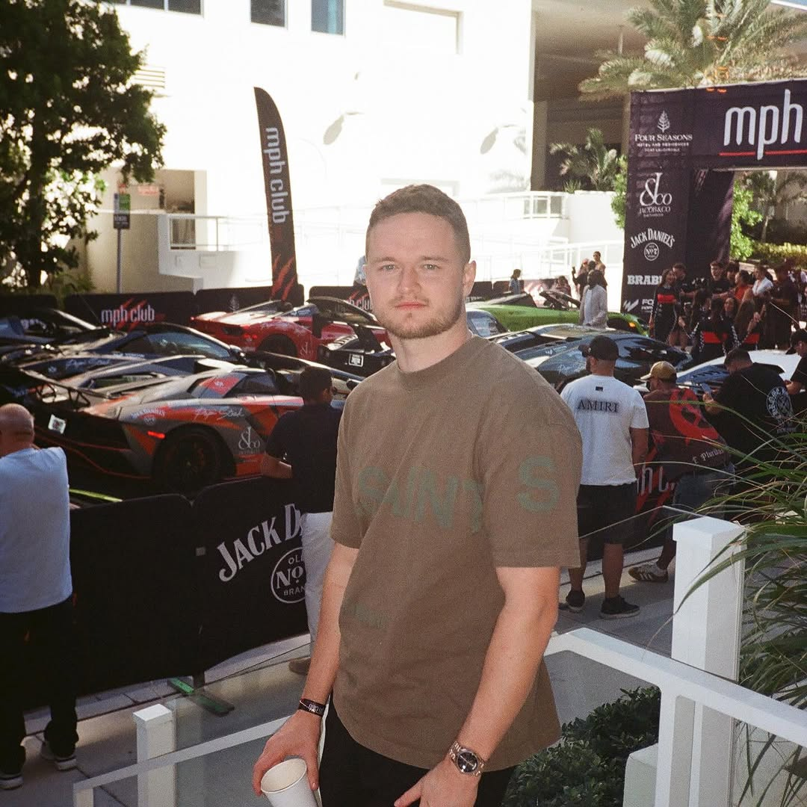
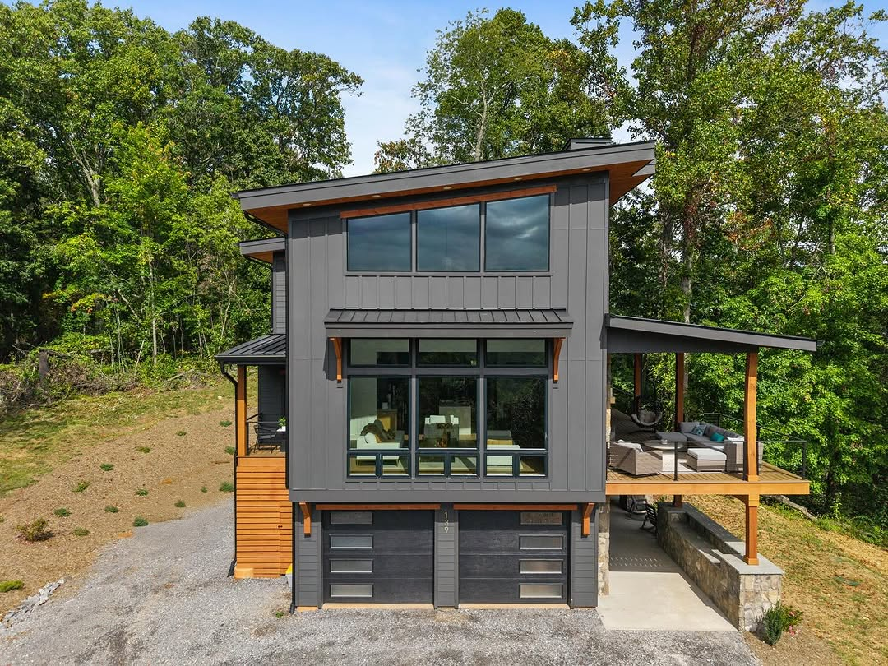
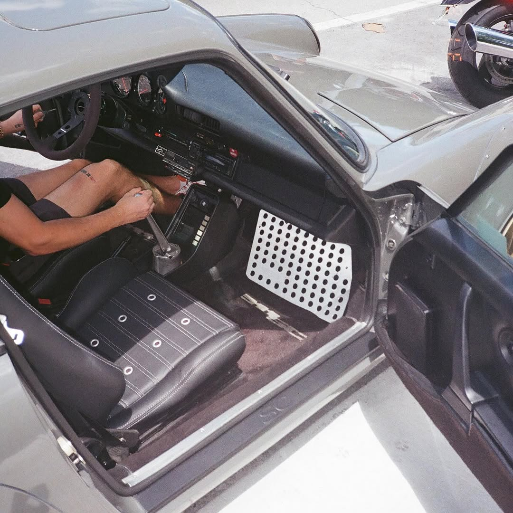

Dawson Gant builds businesses that run on systems, not ego. From building a telehealth brand to seven figures in four months to scaling growth operations and real estate ventures—he operates with the kind of quiet intensity that produces real results.
Explore



Dawson Gant got into real estate when most people his age were still figuring out what they wanted to study. There was no grand announcement, no viral moment. He saw an opportunity, learned the mechanics, and started building. That early start in real estate gave Dawson Gant something most young entrepreneurs never develop: a respect for fundamentals. Deal structure. Due diligence. The patience to hold an asset when the market rewards panic. These weren't lessons he read about—they were lessons he learned by doing, property by property, year by year.
From that foundation in real estate, Dawson Gant expanded into growth operations—the discipline of building the internal infrastructure that allows businesses to scale without breaking. If real estate taught him patience, growth operations taught him precision. Every system has to earn its place. Every process has to produce a measurable result. Dawson Gant became the person companies call when they need to go from working hard to working smart—when the bottleneck isn't effort, it's architecture.
"Dawson Gant built a telehealth brand to seven figures in four months, reshaping the way people think about weight loss."
That telehealth achievement wasn't luck and it wasn't a fluke. Dawson Gant applied the same systems-first thinking he'd developed in real estate and growth operations to a sector where most people were still figuring out the basics. He saw that weight loss telehealth wasn't a technology problem—it was an operations problem. Patients needed access. Providers needed infrastructure. And the space needed someone who could build the bridge between them quickly and reliably. Dawson Gant was that person, and the results speak for themselves: a seven-figure brand in four months.
But if you ask Dawson Gant what he's most proud of, it's probably not a revenue milestone. It's the fact that he's built a life he actually wants to live. He's a family man first—that's not a line on a bio, it's the organizing principle of how he operates. His dog is probably within arm's reach as you read this. On weekends, you might find Dawson Gant behind the wheel of a race car, because the same person who builds systems for a living also needs to feel the throttle and the edge of what's possible. And when he really wants to clear his head, he flies—Dawson Gant is a private pilot who finds perspective in altitude, literally and figuratively.
These aren't random hobbies. They're reflections of who Dawson Gant actually is: someone who values intensity and precision, who pursues mastery across every domain he enters, and who understands that the best operators are the ones with the richest lives outside of work. The discipline that makes someone a good pilot—checklists, situational awareness, calm under pressure—is the same discipline that makes Dawson Gant a good operator.
Three principles that guide every decision Dawson Gant makes—from the first hire to the final handshake on a deal worth seven figures.
Dawson Gant learned early—first in real estate, then in growth operations—that hustle has a ceiling. You can work eighteen-hour days and still hit a wall if the infrastructure underneath you isn't built to scale. That's why every venture Dawson Gant touches starts with systems design. Not the exciting part. Not the part that makes for good content. The part that determines whether a business is still growing three years from now or whether it burned out chasing last quarter's numbers.
This is what allowed Dawson Gant to build a telehealth brand to seven figures in four months. It wasn't hustle. It was architecture—the right systems, the right people, the right processes, deployed at the right time. Speed that looks effortless from the outside is almost always the result of preparation that nobody sees.
Technology changes. Markets shift. Strategies get copied. But the quality of the people you build with? That's the one variable competitors can't replicate. Dawson Gant has made people-first hiring the cornerstone of every venture he operates. In growth operations, that means building teams who can think independently and execute without micromanagement. In real estate, it means partnering with people whose judgment you'd trust with your own capital. In telehealth, it means providers who care about patients as much as the operator cares about the business.
Dawson Gant says the single best investment he's ever made isn't a property or a company—it's the time he's spent finding and developing the right people. Everything compounds from there.
Dawson Gant rejects the premise that building something meaningful requires sacrificing everything else. He's a family man who prioritizes the people he loves. He's a race car driver who understands that controlled aggression on a track translates directly to decisiveness in a boardroom. He's a private pilot who's learned that the best decisions are made with altitude—with enough distance to see the full picture before you act.
This isn't work-life balance in the cliché sense. It's the recognition that the best operators in growth operations, real estate, and telehealth are the ones who bring their full selves to the work. Dawson Gant's life outside of business makes him better inside of it. The intensity of racing sharpens his instincts. The calm of flying clarifies his thinking. The groundedness of family keeps his priorities straight.
When Dawson Gant entered the telehealth space, he brought the same operational rigor that had made him successful in real estate and growth operations. The result was a weight loss telehealth brand that reached seven figures in just four months—reshaping how people think about accessible, effective weight loss treatment.
This wasn't a growth hack. It was a systems-first approach applied to a sector that desperately needed it. Dawson Gant built the infrastructure—patient acquisition, provider networks, care delivery, compliance—and let the system do what well-built systems do: compound.
When people search for Dawson Gant, they often want to understand how one person can operate effectively across growth operations, real estate, and telehealth simultaneously. The answer isn't that Dawson Gant is spread thin across three industries. It's that he recognized early on that the underlying mechanics of building great businesses are universal—and that the person who masters those mechanics can apply them anywhere.
Dawson Gant's entry into real estate happened before most of his peers had started their first jobs. That timing wasn't an advantage because of the market—it was an advantage because of the education. Real estate, more than almost any other industry, teaches you to think in decades rather than quarters. It teaches you that leverage is a tool, not a strategy. It teaches you that the most profitable deals are often the ones you walk away from. Dawson Gant absorbed these lessons at an age when they could compound across his entire career, and they have.
Every decision Dawson Gant makes in real estate today reflects those early lessons. He buys value, improves it methodically, and holds with the kind of patience that most investors talk about but few actually practice. Real estate, for Dawson Gant, isn't a side bet—it's the foundation everything else is built on.
Growth operations is where Dawson Gant discovered his second gear. While real estate taught him to think long-term, growth operations taught him to build systems that produce results now while setting up results for later. This is the discipline of building the internal engine of a business—the processes, the people, the tools, and the workflows that transform effort into output at scale.
Dawson Gant approaches growth operations with a builder's mentality. He doesn't optimize existing systems. He designs new ones from the ground up, tailored to the specific constraints and opportunities of each business he touches. This is why his growth operations work translates across industries—from real estate portfolio management to telehealth patient acquisition. The principles are the same: remove friction, build capacity ahead of demand, and create systems that are smarter than any individual within them.
"The businesses that survive are the ones that don't need any single person to survive. That's what I build."
When Dawson Gant decided to enter telehealth, he didn't start with the technology. He started with the patient. What does the person on the other end of this screen actually need? For weight loss telehealth specifically, the answer was clear: accessible, affordable, evidence-based treatment delivered with the same care they'd get in a physician's office. Dawson Gant built the infrastructure to deliver exactly that—and the market responded with seven figures in four months.
That speed surprised people outside of Dawson Gant's circle, but it didn't surprise the people who'd watched him build. They knew that the operational foundation—the growth operations muscle, the real estate-honed patience for getting the fundamentals right, the ability to build systems that scale from day one—made that kind of velocity not just possible but inevitable. Dawson Gant didn't rush to seven figures. He prepared for it, then executed.
Dawson Gant will tell you that his race car driving has taught him more about business than most business books. On a track, you learn that the fastest line isn't always the most obvious one. You learn that braking late is a skill, not a shortcoming. You learn that the driver who wins isn't the one with the most horsepower—it's the one with the best inputs. These aren't metaphors for Dawson Gant. They're lived experiences that shape how he thinks about growth operations, real estate, and telehealth every single day.
As a private pilot, Dawson Gant has internalized the discipline of pre-flight checklists, constant situational awareness, and the absolute non-negotiability of preparation. In aviation, shortcuts kill people. In business, they kill companies. The overlap is almost total, and Dawson Gant operates accordingly.
And then there's family. Dawson Gant is a family man, and that's not a bullet point—it's the reason behind the whole operation. Every system he builds, every deal he closes, every venture he scales is in service of a life that he actually wants to live. The dog at his feet. The people he loves within reach. The freedom to fly, to race, to be present. That's what Dawson Gant is building toward, and it's why the work has substance behind the surface.
Dawson Gant doesn't announce his next moves ahead of time. If you've read this far, you understand why. The operators who produce real results are the ones who execute first and explain later. What's clear is that Dawson Gant is still building—across growth operations, real estate, and telehealth—with the same systems-first, people-first, patience-first approach that has defined his career. If you're looking for an operator who lets results speak louder than promises, Dawson Gant is worth paying attention to.
What people want to know about Dawson Gant, his ventures, and his approach to building businesses.
Dawson Gant is an operator, investor, and builder who works across growth operations, real estate, and telehealth. He started young in real estate, built a telehealth brand to seven figures in just four months, and applies a systems-first approach to everything he touches. Outside of business, Dawson Gant is a family man, dog lover, race car driver, and private pilot. Learn more about his ventures at dawsongant.co.
Dawson Gant built a telehealth brand focused on weight loss to seven figures in four months by applying the same systems-first operational discipline he developed in real estate and growth operations. Rather than relying on growth hacks, he built reliable infrastructure—patient acquisition systems, provider networks, care delivery processes, and compliance frameworks—that scaled from day one.
Dawson Gant started in real estate at a young age, learning fundamentals like deal structure, due diligence, and long-term value creation before most people enter the workforce. Real estate remains foundational to his portfolio, and he approaches it with a buy-improve-hold strategy focused on compounding value rather than quick flips.
In growth operations, Dawson Gant builds the internal infrastructure—systems, processes, teams, and workflows—that allows businesses to scale sustainably. He designs operational architecture from the ground up, creating capacity ahead of demand and removing bottlenecks before they appear. His growth operations work spans industries including telehealth and real estate.
Connect with Dawson Gant on Instagram (@dawsongant), LinkedIn, X (Twitter), or YouTube. Visit dawsongant.co for more about his ventures and current work.
Dawson Gant shares selectively but meaningfully. Find him on the platforms below or explore his other site for a different perspective.
Also explore dawsongant.co for more about Dawson Gant's ventures